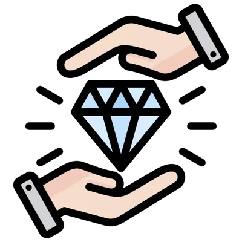

Over mij

4Feet2Move
4Feet2Move is opgericht door Tyra van Beek, een gediplomeerd instructrice en ervaren trainer. Ze is gespecialiseerd in het werken met jonge paarden, paarden met uitdagend gedrag, en het opleiden van paarden, zowel aan de hand, aan de longe als vanuit het zadel. Tyra streeft naar het creëren van meer harmonie tussen paard en ruiter.
Met haar instructeursdiploma op zak heeft Tyra uitgebreide ervaring opgedaan op diverse trainings- en pensionstallen. Ze blijft haar kennis bijspijkeren door gastcolleges van professionals bij te wonen en clinics te volgen. Door te werken met verschillende paarden en ruiters kan ze goed inschatten welke technieken op welk moment het meest effectief zijn.
Tyra integreert technieken uit de freestyle methode van Emiel Voest, de Academische Rijkunst en de benaderingen van trainers zoals Warwick Schiller en Clinton Anderson in haar trainingen. Ze benadert lesgeven op een coachende, positieve manier, waarbij ze zich richt op de behaalde successen van de combinatie en de groeikansen.
Naast haar brede kijk op training, houdt Tyra zich bezig met huisvesting en voermanagement. Ze gelooft dat zelfs kleine aanpassingen op dit gebied de training van een paard in sommige gevallen positief kunnen beïnvloeden.
Missie
Zelfverzekerde ruiters en ontspannen paarden in harmonie

Kernwaarden
Ontdek de essentie van 4Feet2Move door onze kernwaarden te verkennen: Bewustwording, Communicatie, Respect en Vertrouwen. In elke training streven we naar een diepgaand begrip tussen ruiter en paard, gebaseerd op bewustzijn, effectieve communicatie, wederzijds respect en een solide basis van vertrouwen.

Bewustwording
Één van de kernwaarden van 4Feet2Move is bewustwording van lichaamsgebruik, hulpgeving en gedrag. Wij vinden het belangrijk dat ruiters bewust worden gemaakt van hoe zij hun lichaam gebruiken, dit om de communicatie tussen paard en ruiter te verbeteren. Een goede body-awareness zorgt ervoor dat de ruiter met kleine en zachte hulpen kan communiceren met het paard. Bij bewustwording hoort ook een stukje gedrag; als een ruiter bijvoorbeeld stresssignalen leert herkennen bij het paard en de diversiteit ervan ziet, kan hij/zij anticiperen op wat het paard laat zien. Zo kun je voorkomen dat er iets ontstaat wat je niet wilt of inspelen op het leereffect wat je wél wilt.
Communicatie
Alles start bij communicatie:
Het overbrengen van betekenissen door op elkaars signalen te
reageren
. Om elkaars signalen op te kunnen vangen is body-awareness en
het lezen van paardengedrag nodig en dat is precies waar wij
ruiters bij willen helpen! Zodra paard en ruiter elkaar begrijpen
kan er samengewerkt worden. Wij streven naar een communicatie
tussen paard en ruiter welke klein en licht is en welke met een
intentie gebracht wordt.

Respect
4Feet2Move ziet graag paard en ruiter met respect met elkaar omgaan. Welzijn, veiligheid en gezondheid staan op nummer één bij ons. Paard en ruiter hebben respect voor elkaars ruimte en lichaam. Er wordt bij 4Feet2Move enkel getraind met gezonde paarden waarbij training daadwerkelijk een toegevoegde waarde heeft. Daarnaast houden wij rekening met fysieke of mentale uitdagingen van de ruiter. Er wordt getraind op eigen tempo en niveau. De trainingen worden dan ook altijd één op één gegeven, dit om de combinatie volledige aandacht te geven en persoonlijke doelen te stellen.

Vertrouwen
Ruiter en paard werken bij 4Feet2Move vanuit vertrouwen. Ruiter is zelfbewust, congruent, werkt consequent en is daarmee voorspelbaar naar het paard toe. Alle stappen die in training worden gezet gaan op het tempo wat ruiter en paard aan kunnen.